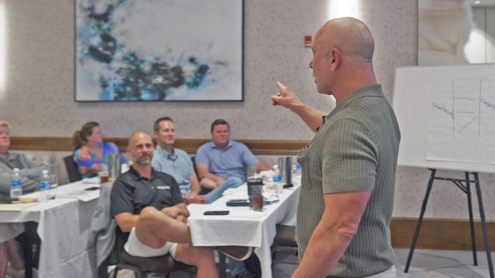
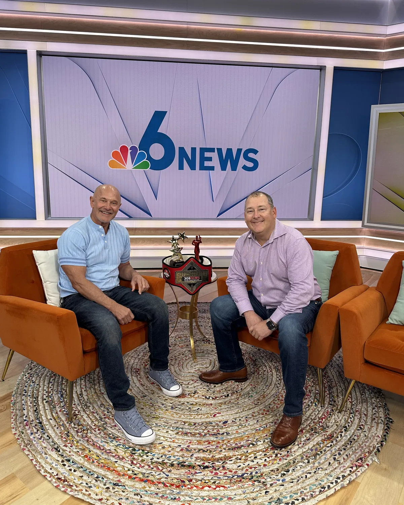
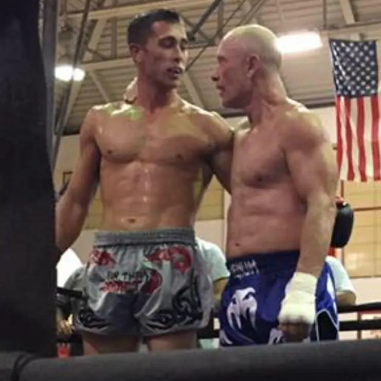

The Keynote
The story creates connection and introduces the Five Pillars.
Inspire
Stuart Warren Dansby spent 30 years building people and businesses, then started fighting at 48 and won a championship at 62. He turns both into five practical pillars your team can put to work the next morning.
Most keynotes leave a room energized and unchanged. Stuart’s story connects with people, and the Five Pillars give them something to do with that feeling: one tool per pillar, built to be used the next day without thinking about it.
“This isn’t about fighting. Fighting is just where I learned these lessons. You’ll never have to throw a punch. But you already have a fight.”
Each pillar pairs a true story from the ring with a true story from business, is backed by published research, and ends with one simple tool. The test for every one: can someone use it Monday morning?
The tool: Name It. Perspective-ize It. Find A Way. Build the Checklist.
“The difference between stress and challenge is perspective.”
The tool: Find the Fight. Weigh It. Take It First. Sign It.
“Successful people do what unsuccessful people don’t want to do.”
The tool: Pick Your Opponent. Watch the Film. Corner Talk. Win the Round.
“Your real competition is not the person across from you. It is who you were yesterday.”
The tool: Build Your Corner. Resource Them. Listen Without Ego. Let Them Own the Fix.
“Judge people by the full body of their work, not their worst five minutes.”
The tool: The Daily Fight Card: a three-minute morning routine.
“Three things happen every day: excuses, apologies and results. Only one of them matters.”
Stuart’s defining strength is developing people, then building the process and execution around them. That’s why Taking the Fight starts with people: sustainable performance does too.
John Albert started as a young gym-membership salesperson who struggled to sell. Under Stuart’s coaching he became owner and CEO of a company generating roughly $85M and growing.

Meet your people at the level the moment requires, from a single keynote to a full curriculum with follow-through. Every engagement is scoped on a discovery call.
The story creates connection and introduces the Five Pillars.
InspireTeams apply the Five Pillars to their own real performance challenges and leave with a plan.
ApplyA deeper curriculum on all five pillars, from understanding to application and sustained performance.
DevelopThe principles move from an event into continued personal and professional development.
DevelopReinforcement that helps leaders and teams drive the pillars into action.
ReinforceBuilt for people & culture development, operational excellence, organizational leadership, commercial growth, and strategy & execution.

With no fighting background, grade 4 arthritis in both knees and life-altering injuries, Stuart could understand a technique in a session but needed weeks of repetition before his body could use it under pressure.
He lost 20 rounds in sparring to win one. He kept showing up. At 62 he won a championship against a 32-year-old, and the award-winning documentary Taking the Fight chronicles his six-year saga.
The limitation was never comprehension. It was physical adaptation. That is the lesson your team needs most.
After about ten festival rejections, Stuart removed his own executive producer credit from the festival version. No one asked him to. Two weeks later, the film won its first festival.
Mission before egoNo graphics budget, no graphics person. A professional who believed in the mission said “give it to me” and created the Taking the Fight logo in about a day.
Ownership & the tribeNico, once a fearful young karate student, asked to score the film. Given ten minutes of footage, he earned the rest, and won four awards for Best Original Music Score.
Courage over comfortFestival submissions. 26 selections. 30+ awards. Absorb rejection, learn, adjust, continue: the same willingness to lose 20 rounds to win one.
Keep goingEffort, preparation and showing up again tomorrow are controllable. It’s a refusal to be outworked in pursuit of the goal in front of him.
Learning is a daily discipline, not a phase of life. There is always something to improve, question or understand more deeply.
Positivity doesn’t ignore reality. It chooses the perspective and energy that allow productive action instead of surrendering to the obstacle.
Stuart is a passionate and driven leader with tremendous EQ, commercial acumen, and organizational agility. He's an asset and a force multiplier.
A visionary executive who builds high-performing business models, develops exceptional teams, and consistently delivers results with integrity and character.
One of the most passionate and motivating leaders I've ever met. Stuart consistently rallies organizations to deliver beyond expectations.
A strategic executive who combines vision, innovation, and disciplined execution while inspiring teams and driving measurable business growth.
Stuart saw strengths in me I didn't yet recognize. His mentorship shaped both my career and the leader I've become.
A high-performing commercial leader whose passion, strategic thinking, and ability to build new capabilities consistently drive growth and innovation.
“Everything you do in life has your signature on it. Everything.”
— Stuart Warren Dansby
Twenty minutes, directly with Stuart. No pitch deck. He’ll ask about your people, your event and the fight in front of you, and tell you honestly whether Taking the Fight is the right fit.
Now booking Florida organizations and teams nationwide. Prefer to send details first? Use the form.